Bastidores • Terê FM 93,7
Fotos do Programa
Conheça a equipe que leva música, pedidos e emoção aos ouvintes do Clube do Rei.
Nossa equipe
Quem faz o programa.
Retratos da equipe e registros dos estúdios, encontros e bastidores do Clube do Rei.
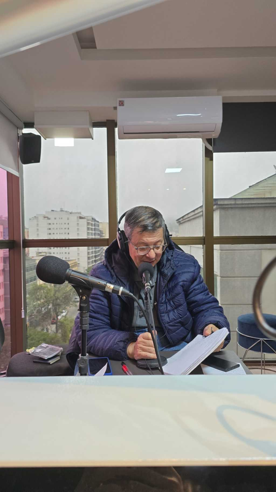
Sérgio Elabras
Radialista e publicitário, iniciou sua carreira no Rio de Janeiro. Passou pela Imprensa FM e pela Alvorada FM, entre outras rádios, trabalhando também na TV Manchete.
“A voz da família que coloca o fã no ar.”
Rafaela Elabras
Nos bastidores, cuidando do áudio para que cada música, mensagem e homenagem chegue com qualidade.
“Nos bastidores, a emoção também acontece.”
Momentos do programa
Registros do Clube do Rei.
Fotos de encontros, estúdios e bastidores. Toque em uma imagem para ampliá-la.
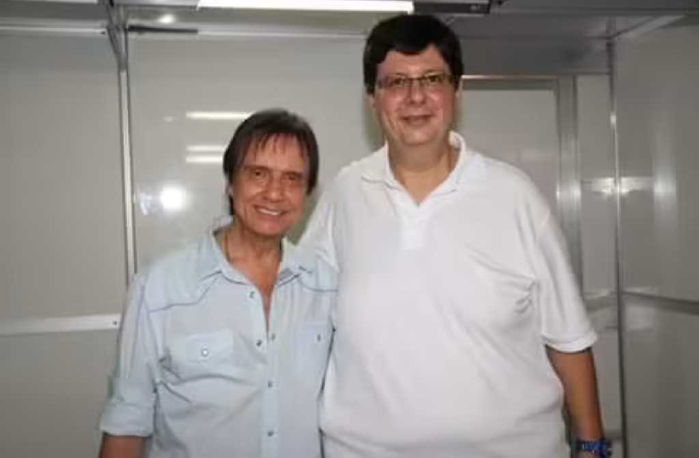
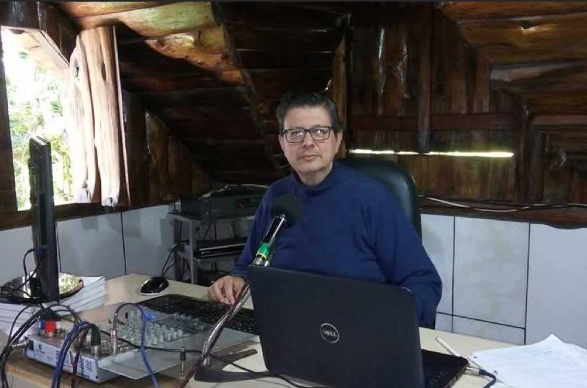
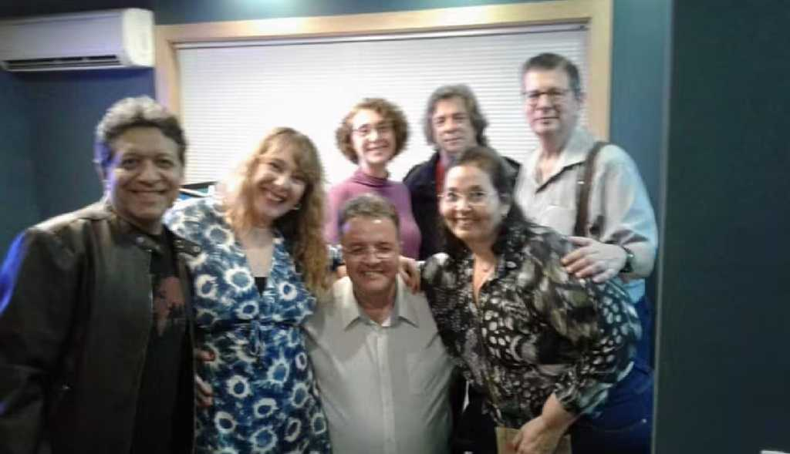
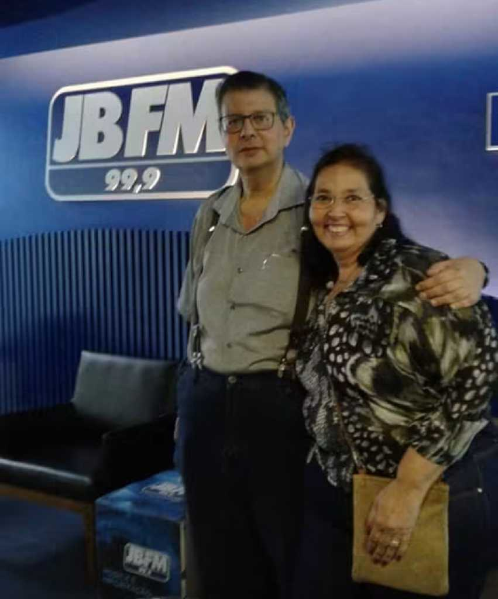
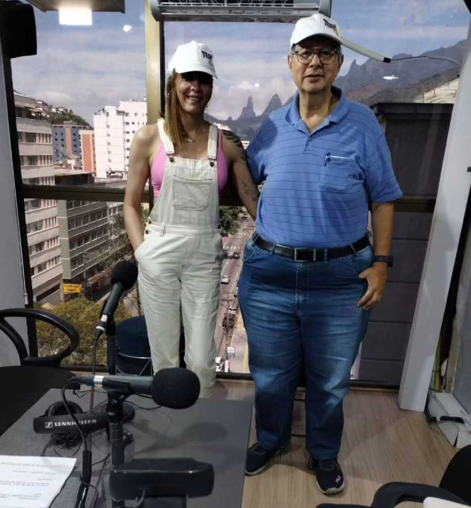
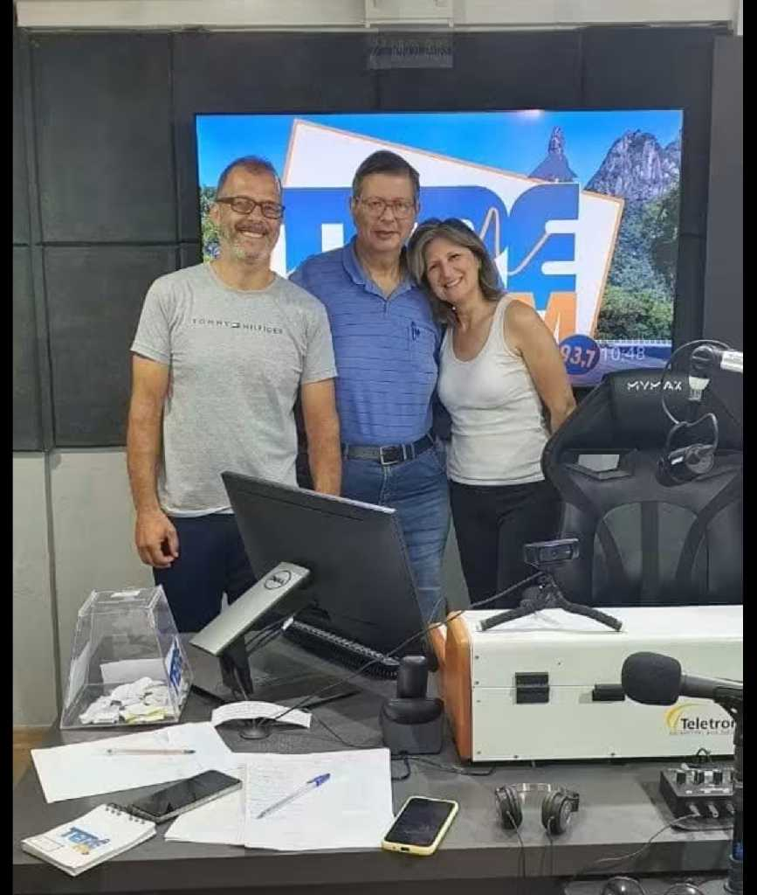
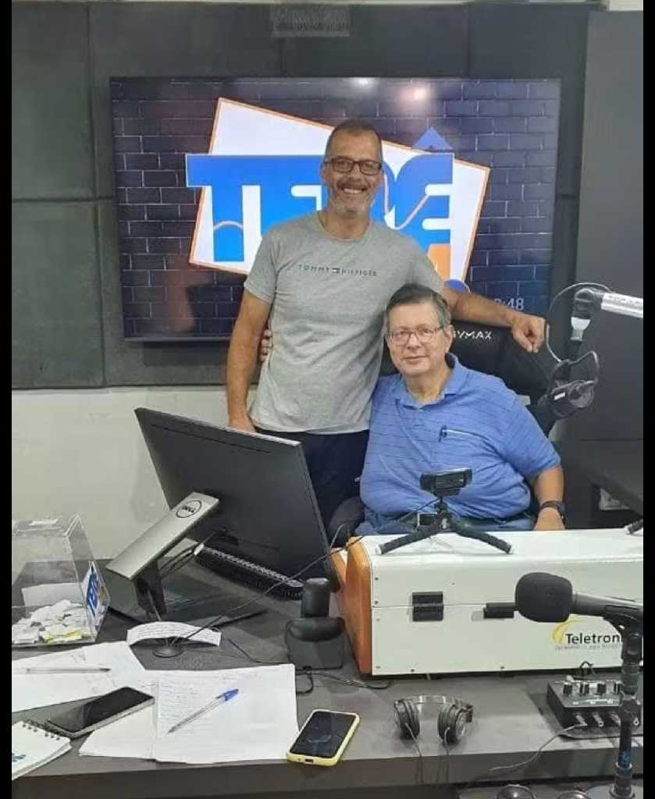
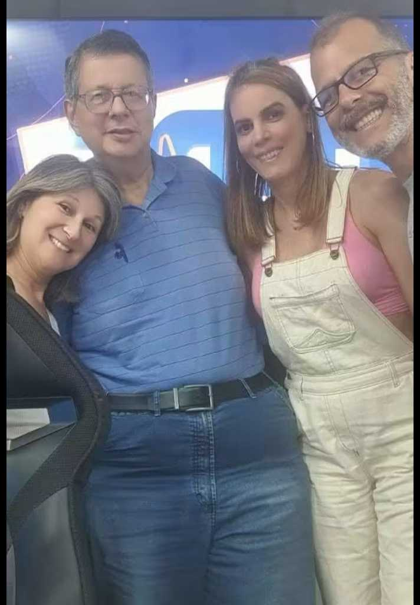
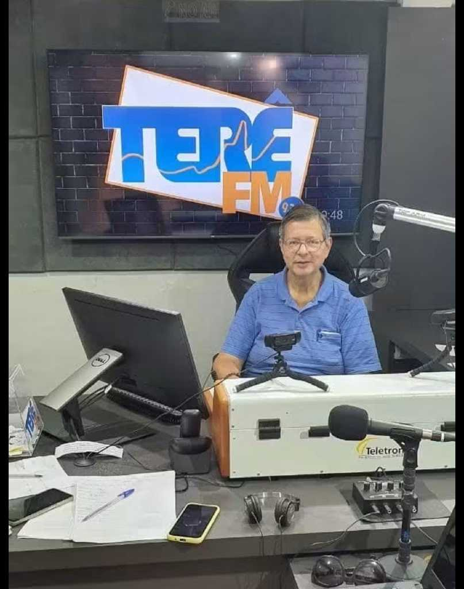
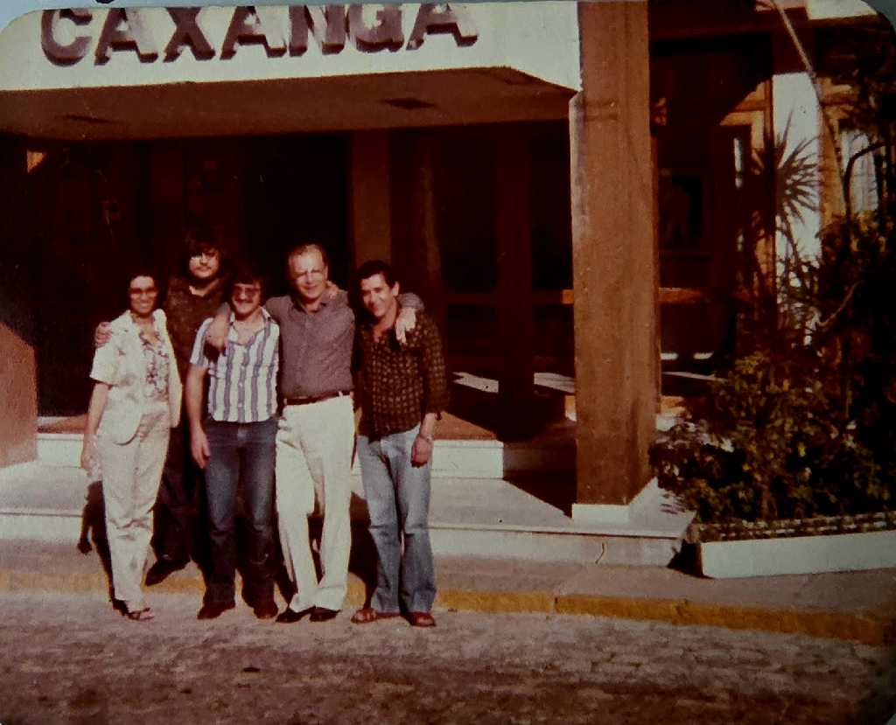